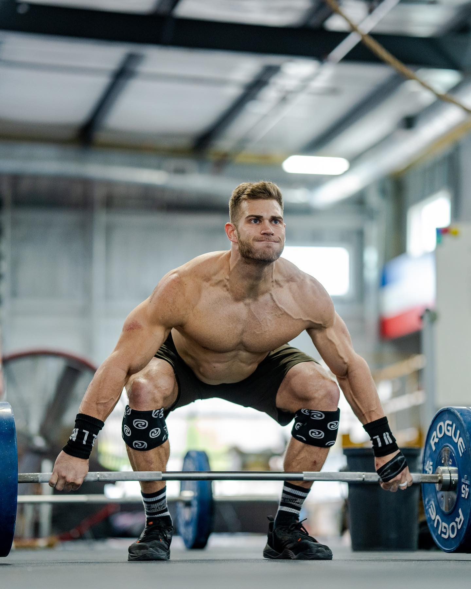

Linda
"3 Bars of Death" - For Time
10-9-8-7-6-5-4-3-2-1 Reps Of:
Deadlift
1.5 x Bodyweight
Bench Press
1.0 x Bodyweight
Clean
0.75 x Bodyweight
Set: 10
Taps remaining sets as you finish them
Final Time
